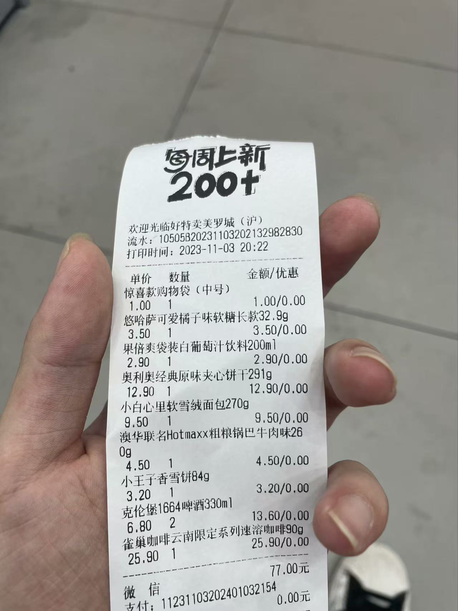
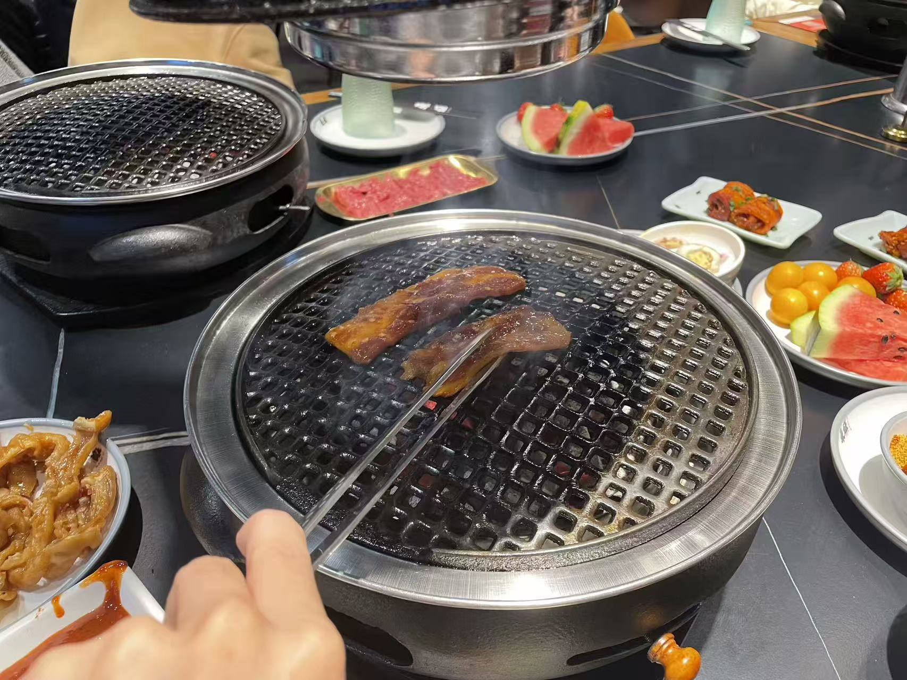

🍬 日常甜蜜
点击卡片，展开属于我们的每一个平凡却闪着光的日子

校园时光
点击展开查看照片（共6张）

排练投喂
排练投喂
那天是歌手大赛决赛排练的时间，在会议中心忙的我没时间吃饭，还是小宝宝点好外卖送过来并且陪我一起吃的午饭。

通宵后的能量补充
通宵后的能量补充
前一天的歌手大赛彩排任务过于繁重，一宿没睡的我饥肠辘辘，小宝宝陪我去绿地的富川小笼一起吃饭为我补充能量。

全家冰激凌
全家冰激凌
在全家的冰激凌机坏之前，我和宝宝特别喜欢吃现打的甜筒。个大好吃两个人还有优惠，正好适合我和小宝宝。
联赛生活
联赛生活
在报国杯联赛举办之后，宝宝经常来到场边为我和我们队加油助威。当喜欢的人在场边看的时候我总是动力十足，可惜后来宝宝总是错过我表现好或者赢球的场次，也是有些遗憾了。

校队比赛
校队比赛
后来宝宝直接加入了校队任职，每次出去比赛都有小宝宝陪我，在场上飞奔有宝宝的助威，下场休息后有宝宝照顾，我就是球场上最幸福的家伙。

小宝宝的球场作品
小宝宝的球场作品
宝宝经常为比赛拍照，也为我校内的联赛生涯留下了一些十分珍贵的影像资料，有宝宝在我生活中真是十分幸福的事情。

校外约会
点击展开查看照片（共11张）
第一次开房
第一次开房
和小宝宝在一起后我们便迫不及待地开房约会了，还一起干了羞羞的事情。每次这样的经历都令人充满幸福感和获得感，喜欢和宝宝做任何亲密的事情。

酸奶罐罐
酸奶罐罐
和宝宝一起去美罗城逛街的时候发现了酸奶罐罐，第一次喝的时候真的惊艳到我了，之后也和宝宝尝试了他们家的很多饮品，非常的美味！

观演后事
观演后事
这次正值放假结束，我和小宝宝许久未见，一起看了SNH48的演出后住在了附近的白玉兰酒店。酒店环境很高级，我们也尽情发泄了对彼此的思念和喜爱之情。

lalaport有高达
lalaport有高达
一次在lalaport的约会，吃饱喝足的我们走到门口正好遇到巨大高达的表演，忍不住驻足观看，还是非常帅气的！

大悦城摩天轮
大悦城摩天轮
从我们在一起前开始，大悦城就是我们最常去的约会地点（仅次于学校附近的商场），我和宝宝也一起体验了楼顶的摩天轮，只不过对于风景我们并不关心，只顾着亲亲抱抱了。

KKV
KKV
在第一次被宝宝带着逛过之后，KKV也加入了我们逛街的NPC任务地点，和miniso、好特卖差不多。

环球港
环球港
环球港虽然离学校较远，但仍然和宝宝一起去过好几次。金碧辉煌的装饰风格下确实各种各样亲民的店铺，我们在这里第一次吃了寿喜烧，也在这里吃了好几次美味的陶欣记砂锅海鲜粥，全是充满美味的回忆。

DQ联名Chiikawa
DQ联名Chiikawa
考研结束后我拉着宝宝来吃DQ，还不是因为和Chiikawa联名了，结果主要的周边已经送完了，于是只能悻悻收下三小只的打卡相框离开。

世纪汇偶遇杰克爱
世纪汇偶遇杰克爱
再一次世纪汇的约会中我们偶遇了Jackeylove正在参与麻辣王子的官方活动，宝宝饿的肚子痛痛也愿意陪我看哥哥两眼，夸夸小宝宝但以后不会再因为这种事让宝宝不舒服啦。

久违的外滩
久违的外滩
这一次我和宝宝看公演，结束后宝宝还想看下一场，于是我便跑去北外滩绿地玩，在等待小宝宝从嘉兴路赶来吃饭的时候拍下了这张外滩的照片。

好特卖
好特卖
逛街的另一个NPC任务就是去好特卖狠狠买零食饮料酒水，每次我都和小宝宝买一大袋子回宿舍吃，虽然宝宝不爱吃零食但在宿舍我们还是吃的非常开心。

一起吃过的美食
点击展开查看照片（共18张）

富川小食堂
富川小食堂
学校附近的富川小食堂专做家常下饭菜，晚饭不知道吃什么的时候我就会和宝宝一起去吃一顿丰富多样又十分美味、经济实惠的饱饱晚餐，随后再手拉手散步回学校。这样一起生活的美好点滴总是让人幸福感暴增。

人民的西餐厅-萨莉亚
人民的西餐厅-萨莉亚
再来上海之前我知道的连锁西餐只有必胜客，但当宝宝带我吃了萨莉亚之后我就再也没有看过必胜客一眼。种类丰富又经济实惠，想吃西餐时的不二之选。在这里还发生了著名的“曼大哥事件”，令人忍俊不禁。

鱼酷！
鱼酷！
在郑州就多次品尝过鱼酷的我带宝宝一起吃了好多次鱼酷，宝宝本来就爱吃鱼这家还做的很好吃，我还充了会员后来和宝宝吃了很多次，还有经典的“大四喜套餐”。（虽然套餐下架后不久球队也解散了）
先起半步颠
先起半步颠
半步颠是我吃过最好吃的川菜馆，量大实惠又美味，每次和宝宝去吃都要狠狠炫饭，还要配上啤酒喝才过瘾。不过后来不知道什么原因经营情况逐渐下滑，最终也是无奈闭店搬走。

点都德
点都德
说到粤菜和点心我的全部了解基本都来自于点都德，宝宝也很喜欢吃尤其是其中的明火白粥配香香橄榄菜，我则是很喜欢喝茶配虾饺皇、红米肠等小点心吃。

点都德
点都德
说到粤菜和点心我的全部了解基本都来自于点都德，宝宝也很喜欢吃尤其是其中的明火白粥配香香橄榄菜，我则是很喜欢喝茶配虾饺皇、红米肠等小点心吃。

绿茶餐厅
绿茶餐厅
作为杭帮菜的（应该是）连锁餐厅，绿茶虽然算不上最好吃的，但他一定是最经济实惠的。菜品种类也十分丰富，就是他们的西湖牛肉羹实在是令人难以理解。

蜀山有牛
蜀山有牛
蜀山有牛可以说是我和小宝宝逛街发现的又一个宝藏店铺了，他更加经济实惠，但却十分的美味，从翘脚牛肉到红烧肉，再到筷子牛肉鸭血，每一个菜品都十分的美味。但可惜后来也是因为经营原因关门，恐怕短时间内只能回忆了。

寿喜烧
寿喜烧
要说和宝宝在一起后最经常吃的当然是寿喜烧自助，两个人经常在有钱的时候饿一整天然后去狠狠炫一堆寿喜烧，最后撑到扶墙出。说来已经很久没吃过了，之后有机会还要和宝宝一起吃！

DQ
DQ
在校吃kfc，出校门吃DQ。作为我们俩都很认可的冰激凌店，DQ也经常成为我们出门约会的冰激凌选择。只不过宝宝喜欢各种种类和口味的，而我这个不懂行的一般就吃暴风雪和好几层的甜筒。

呷哺呷哺
呷哺呷哺
在了解到复地活力城这个商场之后，我也第一次在宝宝带领下吃了呷哺呷哺小火锅。之后几乎每次没钱还想吃火锅的时候就和宝宝来吃，虽然算不上美味但经济实惠还能吃的饱饱的，评价为顶级。

美味日料
美味日料
和宝宝在一起之前我一直觉得吃日料太腻了，但每次和宝宝一起吃的日料都非常美味，看样子选店的眼光非常重要。

三文鱼
三文鱼
作为日料中宝宝最喜欢吃的单品之一，三文鱼基本上是每次必点。但生的我确实有点顶不住，还是喜欢吃炙烤后的。

香香拉面
香香拉面
小宝宝发现在孙桥那边有一家很不错的日料店，于是之后也光顾了几次。他们家的烧鸟和拉面非常不错，唯一的缺点是寿司比较少且价格并不是太实惠。还有一次在吃完打车的时候突然想上厕所，让宝宝先招呼司机的有趣经历。

滨寿司
滨寿司
以前半步颠的位置开了滨寿司，反而让我和宝宝光顾的次数更多了。亲民的价格，回转寿司的新奇体验，以及丰富的种类，在之后几乎成了我们的日料首选。

陶欣记
陶欣记
当当当当！环球港的巨星陶欣记砂锅海鲜粥闪亮登场！这个可以说是我和宝宝都非常喜欢的店铺了，炒过的各种海鲜加入粥底之中，鲜香美味，而且价格还十分公道，直接给到夯爆了！

陶欣记
陶欣记
看看这个粥的成色，鲜味都要透过屏幕渗出来了。不管了，依旧夯爆了！

赵记甜品
赵记甜品
在小宝宝带我尝试甜品之前我一直以为是那种甜到发齁的甜点，真正尝试后真想狠狠抽自己巴掌！太美味了！不仅有小甜水还有咖喱鱼蛋车仔面吃，简直是极品搭配。以后我也要加入宝宝的甜品品鉴行列了！

东盛
东盛
放在这个位置纯属是我刚找到烤肉的图片。自助餐里扛把子，和寿喜烧掰手腕的东盛自助烤肉，其实最棒的一点还是宝宝夸我烤的肉好吃嘿嘿，所以我愿意给小宝宝烤一辈子的烤肉！

演出活动
点击展开查看照片（共11张）
上海体育场
上海体育场
这是小宝宝第一次陪我现场看比赛，上海体育场的宏伟和帅气让我深深震撼，河南队的客场表现也让人十分惊喜。有小宝宝陪我看比赛感觉幸福档次又上升了！

星梦剧院
星梦剧院
在小宝宝安利我颜沁之后便多次随宝宝造访星梦剧院，这张拍摄于我的第一次公演之旅----苏珊珊生日公演。曾经N队的辉煌还历历在目，不过不论团里成员发展如何，我和小宝宝在嘉兴路的回忆都会永远存在。

黄龙体育场
黄龙体育场
第一次看国字号的比赛就是和宝宝一起在杭州看的亚运会，氛围超级好，也深刻领教到了小宝宝灵敏的洞察力，每次举起相机就能录到进球时间，以后真得多和宝宝一起看比赛了。

浦东足球场
浦东足球场
我的评价是不如上海体育场一根。二层看台很高还很陡，面前的玻璃护栏还挡视野，更令人气愤的是当天徐嘉敏的表现还十分灾难，总归不是一个很好的回忆，评价为拉完了。

颜沁！
颜沁！
寒假过年前的最后一场公演，没想到成了我来嘉兴路的的最后一次。这次我买到了颜沁的写真，但是不久之后就受到了颜沁的退团消息。不管怎样还是要感谢小宝宝给我安利颜沁，带给我的欢乐和幸福。

应许之地
应许之地
承载我美好记忆的最好看的公演，可惜再也看不到曾经的成员跳这套公演了。

66生日公演
66生日公演
在我看过的公演中66的这场生公无疑是最出色最好看的一场。不仅节目编排十分用心，66本人也是那么可爱，并且还让我看到了很多想看的北芭的成员。祝愿66和可爱的小宝宝以及我都能够更加幸福美满。

春天落樱，猫出现的街道
春天落樱，猫出现的街道
66生日公演展牌，和小宝宝都在前面打了卡，也算是和66一起留下了难忘的回忆。

上海大剧院
上海大剧院
在上海大剧院和宝宝一起看了歌剧魅影的原版巡演。只能说没有现场看过歌剧的我还是低估了这项伟大艺术的感染力，再加上一部直击灵魂的经典名著，直接当场把我震撼的无以言表。

歌剧魅影
歌剧魅影
歌剧魅影票根留念。

歌剧魅影
歌剧魅影
歌剧历史上的伟大作品。致敬！

礼物合集
点击展开查看照片（共3张）
圣诞小饼干
圣诞小饼干
圣诞节之际，小宝宝活动之余专门为我挑选的可爱小饼干礼物！我一直珍藏着完全舍不得吃呜呜呜太喜欢了。

小宝宝买给我的Chiikawa
小宝宝买给我的Chiikawa
小宝宝知道我特别喜欢Chiikawa，出去玩的时候遇到了扭蛋和周边也专门拍照给我为我拿下送给我，最喜欢小宝宝啦！
、、
珍贵的手作围巾
珍贵的手作围巾
小宝宝竟然亲手为我织了围巾！又好看又暖和，并且我能感受到其中深深的爱意。感谢小宝宝亲手为我做的情谊满满的礼物，我也会努力用充满心意的礼物让宝宝开心的！